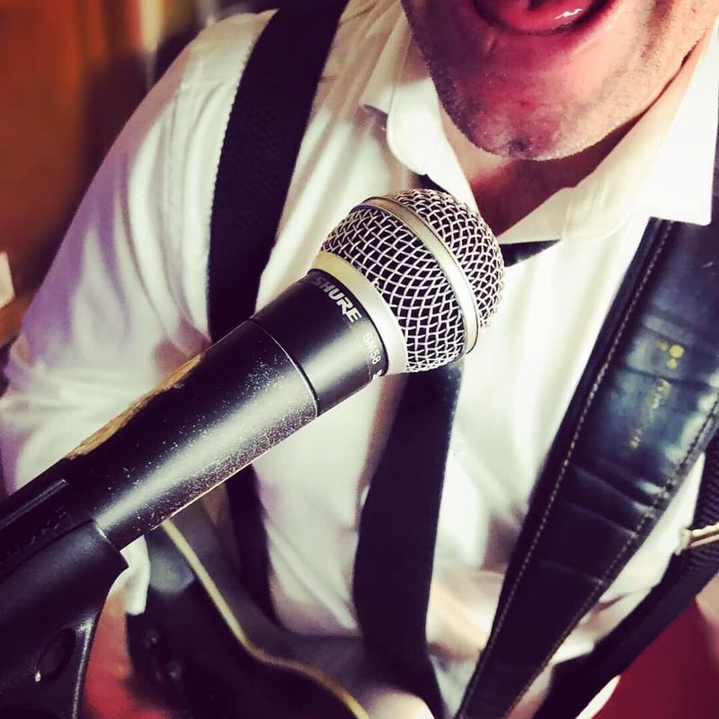
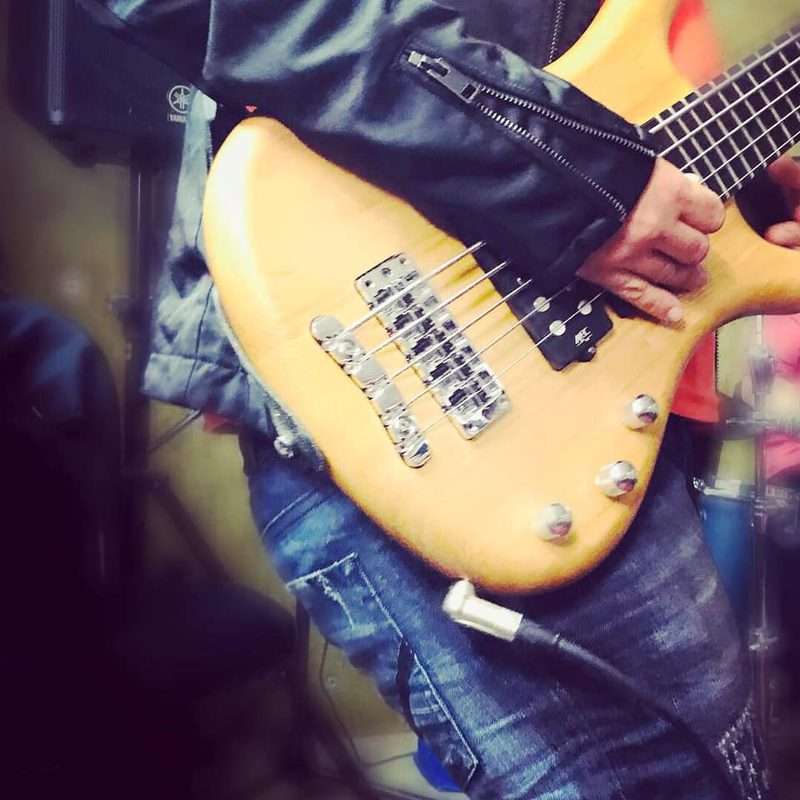
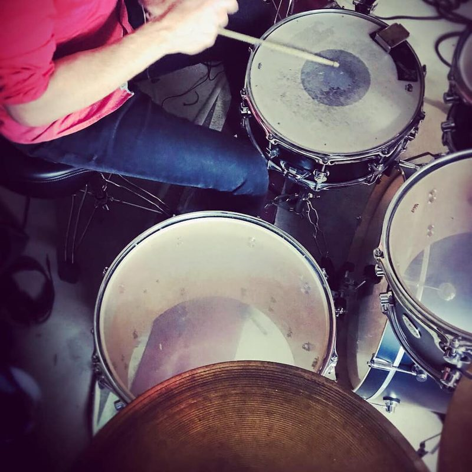
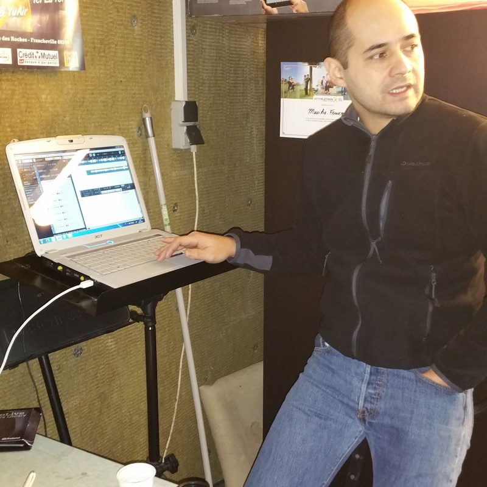
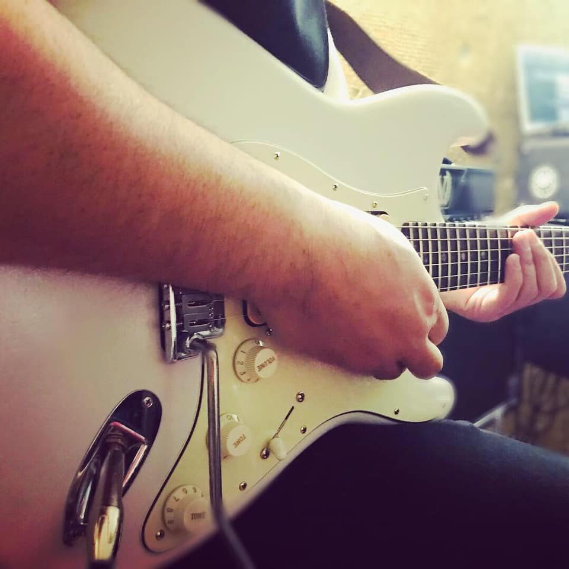
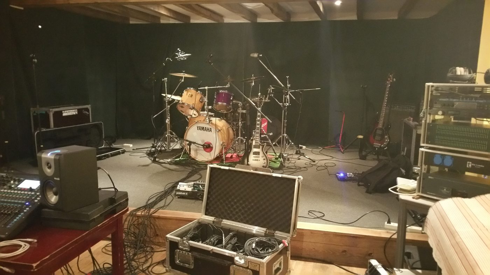
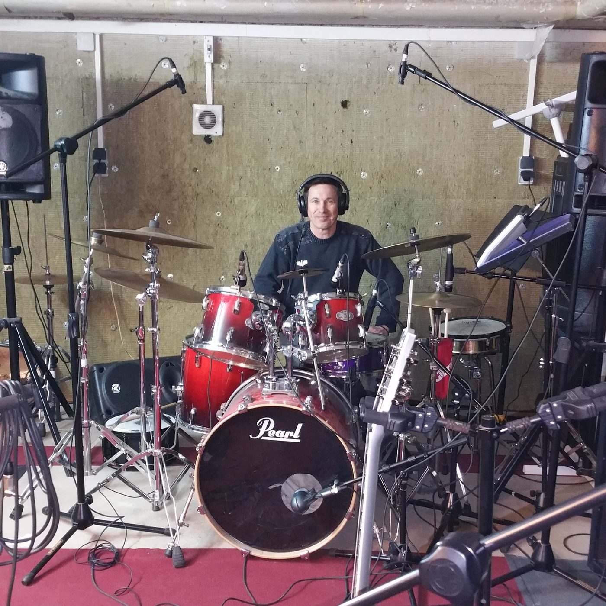

Your band's private cloud and pocket rehearsal studio. Rehearsals and Cubase / Studio One projects shared across every PC and phone, and for every song: separated instruments, chords, color-coded structure, adjustable tempo. On your own PC, no subscription.
No data center100% freeNo subscriptionNo adsNothing to install on your phone
The problem
One band, five apps, and still not the right file.
The rehearsal WAV is on WhatsApp, compressed. The Cubase project got overwritten. The guitarist forgot the bridge chord. And everyone pays their own subscription.
😩 Today
Sharing rehearsals Cloud + full quota
Practicing a song Paid app
Finding the chords Yet another app
Sending a big WAV Link that expires
Listening in the car Compressed WhatsApp
Two people, one project Session overwritten
ResultScattered and costly
→
🤘 With 28JoursBox
A shared folder on every PC Unlimited
Separated instruments, tempo, loops Included
Chords and key, beat by beat Included
Public link or email One tap
Lock screen and CarPlay Original quality
Automatic Cubase / Studio One locks Zero overwrites
Price€0, forever
From rehearsal to arrangement
Record the rehearsal on your phone. Rework the song the next day.
No sound engineer, no cables, no computer in the rehearsal room: one phone is enough to make quick demos. Then everyone, at home, can suggest a structure and make their own version of the song, which the others can hear.
Record at rehearsal
+ › Record audio, then the big red button, on a real drum groove (100 reference grooves in 10 styles, recorded in a studio) or a simple click. When you stop, the played part is pre-selected, the level is set, and the take is already cut into patterns: tap one to loop it. Trim and fade with a finger.
No network? Keep it on the phone
Rehearsal rooms rarely have Wi-Fi: choose Keep on the phone, then Send all once you're back on the network. The take travels lossless (FLAC, about twice as light as WAV), resumes by itself after a cut without losing anything, and lands as an m4a in the folder you chose.
The server understands the song
As soon as it arrives, your band's server analyzes it by itself: tempo, bars, sections, A/B/C patterns, chords. At night it also separates the vocals, guitars, bass and drums. On your PC, not in a data center.
Rearrange it like building blocks
In the advanced player, the song arrives already cut into colored sections. Then it's up to you:
move sections and blocks: long press, then drag;
change their order, duplicate, delete, keep only a selection;
name the sections: Intro, Verse, Chorus, Bridge, Solo…;
repeat a loop as many times as you want (×2, ×3, ×8…), even a drum loop of a few seconds, with no gap;
extract a selection as a new file, or save the whole new arrangement.
Everything can be undone. Corrections to the sections are shared with the whole band.
Add your part on top
Still in the advanced player, the red button records a take over the song, aligned to the music. It becomes a mixer track and a file shared with the band, ready for Studio One or Cubase.
Everyone makes their version, then on to the DAW
Save your arrangement: it becomes a new file in the band folder, which the others can listen to and comment on. When the structure is settled, To Studio One or Cubase creates a ready-to-open project with separated tracks, or you take the WAV into any DAW.
Real screenshots, in the order you'll use them, with one of our own songs, "Born to lose". The app is available in French and English (the advanced player and the recorder are still in French for now).
1. Record the rehearsal, to a click or a real drum groove
2. Find it in the band folder
3. Rework it in blocks that loop
4. Separate the instruments and mix
5. Play the chords, as guitar diagrams
6. Share it, or send it to your DAW (Studio One, Cubase)
In video
Visual examples of the features
Each short video shows one feature, filmed in the app (in French).
The band's files
The band folderJump back up in one goSort by name, date, type or sizeListen with one tapMini-player: loop, next songSwipe for quick actionsA file's menu: WAV, Studio One, Cubase, textSelect several filesMove into a folderRenameCreate a folderFind a fileAdd: record, import, photosImport a YouTube video's audioSplit a gig recording into songsMerge several songs into one
Chat and planning
The band chat, with photosThe calendar: absences, rehearsals and gigs
View and share
Gig photos and videosRead a Word or PowerPoint documentCreate a share linkSend a song by emailInvite a new member
The advanced player
Open the advanced playerZoom into the songLoop a blockA whole section with a double tapSlow down without changing the pitchChange the key: the chords followThe metronome on the songThe trainer: the tempo rises each time roundSeparate the instruments, mute the bassHigh-quality separation: 5 cleaner tracksHear one instrument aloneChords as guitar diagramsThe chord being played, highlighted during playbackThe scale on the neck, guitar or bassBass on the neck: scale and out-of-scale notes
Rearrange and edit
Name a section: verse, chorus…Rearrange: duplicate a sectionUndo, redoExtract a passage into a new fileEdit: keep the good partA fade-in with one tapConvert to WAVTo Studio One or Cubase: fixed or variable tempo
Safety and settings
The Me tab: trash, shared links, settingsThe trash: nothing is lost for 30 daysVersion historySettings and group administrationThe server's status, from your phone
Your data, at home
Your music has no business in a data center
Online storage services keep your rehearsals and unreleased demos in distant buildings owned by large companies, and charge you every month for the space. 28JoursBox does the opposite: everything stays on a PC in your band.
🏠 Stored at home
Files, versions, takes, analyses, separated tracks: everything is on the disk of your server PC. No third-party service stores your songs.
💶 Costs you control
No price per member or per gigabyte. You buy a disk once and pay the electricity of a PC. Our band: about 720 GB on a 4 TB disk.
🧠 AI at home
Instrument separation, chords, song structure and even speech-to-text transcription are computed on your PC, not by an online AI provider. Your demos and meetings never leave.
🔑 You hold the keys
No company account, no terms that change overnight, no price increase. Your files are ordinary files on each PC, readable without 28JoursBox.
No take lost: recordings are saved on the phone as you go
A separate family space, invisible to the band, for photos and videos of your loved ones
Locks on open projects
Mobile data access, QR code invites
The pocket studio
In your phone's browser, nothing to install: every song split, analyzed and ready to practice.
Vocals, guitars, bass, drums separated
Chords, key and color-coded structure
Tempo 50–150%, loops, overdub takes
Real drum grooves to record over (100 grooves, 10 styles)
The bridge to the studio
One tap, and the song becomes a ready-to-open Studio One or Cubase project: separated, colored tracks locked to the grid.
24-bit / 48 kHz WAV
Takes as extra tracks
Optional tempo stabilization
Photos & videos
The band's photos and videos too
Gig photos, rehearsal videos, posters, setlists: send them straight from your phone and the whole band can see them right away, on every phone and every PC. Stored at home with everything else, not in a data center.
📷 Straight from the phone
Take a photo or a video from the app, or pick several from your gallery: the app reminds you when you last sent some.
🖼️ Full screen for everyone
Thumbnails in the list, photos and videos full screen, in landscape too. Swipe to the next one.
💻 On every PC too
They land in the 28JoursBox folder of every member's PC, ready for a poster, a video edit or social media.
🔗 Shared with a link
A whole gig folder for the venue or your fans: a public read-only link, with a password and an end date if you like.






The song, understood automatically
Show up to rehearsal knowing the song
Drop in a recording, a demo or a YouTube link: a few seconds later the song is split and analyzed, on your server.
Structure in named sections — Intro, Verse, Chorus, Bridge, Solo… always the same color, with A, B, C patterns.
Chords beat by beat — shown above the blocks, the current one underlined; tap a chord to jump to it. C D E or Do Re Mi, transposition.
Key and suggested pentatonic scale to improvise over the solo.
Shared corrections — one member fixes the sections, the whole band benefits.
Separated instruments
Mute the guitar. Play it yourself.
Every song is split into four tracks by a state-of-the-art AI: vocals, guitars, bass, drums. A real mixer, set and remembered for each song.
Mute and Solo on every track, dB faders.
Tempo from 50% to 150% without changing the pitch.
Sample-accurate loops, repeats ×2, ×3… and a trainer that speeds up step by step.
Count-in and metronome locked to the detected beats.
In the car: lock screen and CarPlay.

Record over it
Your take lands right on the song
Press ⏺: count-in, playback of whatever you want to hear, and the mic records. The take is aligned precisely thanks to a measurement of the phone's latency, and becomes a mixer track shared with the whole band.
One take per pass when looping a section.
"Align" trims start and end to bar lines, finding the "1" from the kick and snare.
To Studio One or Cubase: ready-to-open project folder, colored tracks, grid accurate from start to finish.
0 €subscription, forever
4separated tracks per song
50–150 %tempo without changing pitch
100 %of your files stay at home
Your data, at home
The server is a PC in your band
No file goes to a hosting company. Even the AI runs on your machine: nothing is sent to an online service. The only storage limit is your hard drive.
No silent data loss: conflict copies instead of overwrites, 30-day trash and version history.
Automatic locks when Cubase or Studio One opens a project: nobody overwrites someone else's session.
Resumable transfers: a dropped connection mid-upload of a multi-GB session loses nothing.
Daily backup and a weekly integrity check.
Heavy processing overnight: next morning, everything is ready.
Comparison
What no other tool brings together
Cloud storage
AI practice app
28JoursBox
Where your files are stored
A company's data center
A company's data center
At home
Where the AI runs
—
A company's data center
Your PC
Folder synced across every PC
✔
—
✔
Files on your own machine
—
—
✔
Built for Cubase / Studio One
—
—
✔
Separated instruments
—
✔
✔
Adjustable tempo and loops
—
✔
✔
Chords and key
—
✔
✔
Structure shared with the band
—
—
✔
Aligned, shared takes
—
—
✔
Ready-to-open Studio One / Cubase export
—
—
✔
Monthly subscription
often
often
none
Price grows with
GB and members
members
nothing
Who is it for?
Made for people who play together
🎸
Cover and original bands
Everyone shows up to rehearsal knowing their part, at the right tempo.
🎚️
Bands that record
From rehearsal to studio without manual realigning or overwritten sessions.
🎓
Music teachers
One song, every track, at each student's tempo.
🔒
Privacy-minded musicians
Your unreleased demos never leave your home.
Setup
Ready in ten minutes
One person takes care of the server. Everyone else just clicks a link.
Install the server
On a Windows PC in your band (even an old PC sitting in a closet). Band name, your nickname, and you're set.
Send the invite link
By WhatsApp, email or QR code. Each member just picks a nickname.
Play
The folder appears on every PC's desktop, and the app on everyone's phone home screen.
FAQ
You're probably wondering…
Is it really free?
Yes. No subscription, no paid version, no ads. If the project helps you, you can support its development with a donation, no obligation.
Why not just use an online storage service?
Because your songs would then live in a company's data center, under its terms and its prices, which grow with every gigabyte and every member. With 28JoursBox, they stay on your band's PC, the AI runs there too, and there is nothing to pay per month. The full argument.
What do I need?
A Windows 10 or 11 PC (64-bit) that acts as the server and stays on, with disk space for your songs. Other members use their Windows PC and/or their phone (iPhone or Android), with nothing to install on the phone.
Does it work on Mac?
Not yet for the server or the synced folder. The web app, however, works in any browser, including on Mac, iPhone and iPad.
What about away from home, on mobile data?
Yes. The simplest way: Tailscale (free), built into the server, with nothing to set up on your router or phones. Faster: direct access, set up once by the admin (a free DuckDNS name, a port forwarded on the router, an HTTPS certificate obtained automatically); Tailscale then stays as a backup. At home, PCs keep using the local network, which is faster for big WAV files. Step-by-step guide, router by router.
Are my songs sent to an online AI?
No. Instrument separation, chord, tempo and structure detection, and speech-to-text transcription all run on your server. Nothing is sent to an online service.
Do I need a graphics card?
No. Heavy processing (separation, fine analysis) runs overnight at low priority so the server stays responsive. Next day, everything is ready.
What if I uninstall?
Your files and the server data are kept. Reinstalling or updating brings everything back: accounts, history, trash.
Can I view Word, Excel and PowerPoint files?
Yes, on phones and in the browser, provided LibreOffice (free) is installed on the server PC, in its default folder. The server converts each document to PDF the first time it is opened, then prepares new ones at night. Without LibreOffice, the app shows "Preview unavailable" for these files; everything else works.
What if the server PC breaks down?
Every member's PC keeps a full copy of the folders it syncs, so your files are not lost. But the server's history, trash and analyses are only on its disk: that's the flip side of independence. Make a regular backup to an external disk, ideally kept somewhere else. The user guide explains how.
Next rehearsal, everyone's ready.
Install 28JoursBox tonight, send the link to your band, and play.